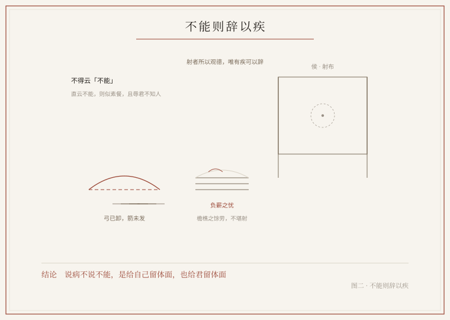

曲礼下 · 二·九 · 第 132 课
君命士射，士若不能，不可直说不能，要说有病。且不只说有病，还要说出病由：「某有负薪之忧。」注谓射以观德，唯有疾可以辞。
说什么事：君使士射，不能，则辞以疾。言曰：「某有负薪之忧。」
落在哪一层：礼，兼及语言之术。
为何编在此位：上两节论名与称，此节论辞——都是口上的分寸，只是这一节要说出一套完整的话。
【经】君使士射，不能，則辭以疾。言曰：「某有負薪之憂。」
【注】射者所以觀德，唯有疾，可以辭也。使士射，謂以備耦也。憂或為疾。
【疏】……射法，每两人相对，以决胜负，名之曰耦。耦，贵贱必对，故卿与卿耦，大夫与大夫耦，或奇馀不足，则使士备耦。……「不能，则辞以疾」者，士若不能，不得云不能，但当自称有疾也。所以然者，夫射以表德，士既升朝，必宜有德；若不能，则是素餐之辱，兼辱君不知人，误用己也。……不直云「疾」而云「负薪」者，若直云「疾」，则似傲慢，故陈疾之所由，明非假也。
耦 疏「每两人相对，以决胜负，名之曰耦」。射之分组。
备耦 注「谓以备耦也」。士射非为主，为足数。
辞以疾 不以「不能」辞，以「疾」辞。
负薪之忧 负，檐也；薪，樵也；忧，劳也。疏「言已有檐樵之馀劳，不堪射也」。
不直云疾 疏语。只说有病，像是推托；说出病由，才见其真。
忧或为疾 注末。一本「忧」作「疾」。
国君命士参加射礼，士若不能射，就以有病推辞。要说：「某有背柴的旧劳，担不起。」
不能射是德上的亏，故不能直说。说病不说不能，是给自己留体面；说出病由不止说病，是给君留体面——让人相信这不是推托。一句话里两个方向的分寸。
第一层 射以观德 射不是竞技，是看人。故不能射，等于交不出德。这一句把射礼的性质说尽了。
第二层 为什么不能直说 疏两层：一为素餐之辱（食禄而不能），二为辱君不知人（君用错了人）。直说「不能」，等于当面说君看错了人。
第三层 负薪之忧的双重谦 一谦己曾贱（未为士时曾负薪），二谦今犹带旧劳。士而称负薪，是以最贱之役自处——谦到极处，反而最见分寸。
第四层 疾有等级之称 疏引《音义隐》：天子曰不豫，诸侯曰不兹，大夫曰犬马，士曰负薪。同是病，称谓随位而降。连生病都要按级说话。
与今日何干 「我不能」与「我这两天旧伤犯了」，是两种完全不同的职场语言。前者是拒绝，后者是解释；前者关门，后者留门。
| 左 | 右 |
|---|---|
| 君使士射 | 以备耦，非主射 |
| 不能 | 不得云不能 |
| 则辞以疾 | 唯有疾可以辞 |
| 某有负薪之忧 | 陈疾之所由，明非假 |
| 射以观德 | 不能则素餐之辱 |
| 天子不豫，诸侯不兹 | 大夫犬马，士负薪 |
画一面立在远处的射布（只画布与两侧支杆，布面留空不画靶心），布前地上横放一张弓、一束箭，弓弦已松；弓旁一小捆柴薪，薪上压着一只手掌的浅印。射布与人之间大片留白，不画人、不写文字。赭色只用在弓弦与那捆柴薪上。
